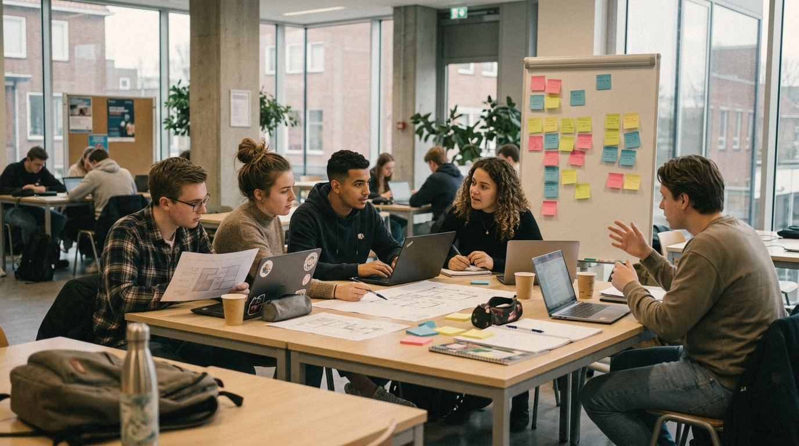

Home › Opleidingen › Management & bedrijfskunde

Opleidingen in Management & bedrijfskunde
Organisaties leiden en verbeteren: mensen, processen en strategie. Hier staan alle 58 opleidingen in deze groep, op mbo, hbo en universiteit.
Wat kun je ermee?
- Manager (leidinggevende) of teamleider
- Adviseur of consultant (adviseur)
- Ondernemer
- Projectleider
Op mbo (21)
- Allround coördinator instructeur buitensport
- Allround instructeur buitensport
- instructeur mbo
- Instructeur paardensport en -houderij
- Intercedent
- Legal, Insurance & HR Services Specialist
- Leidinggevende team/afdeling/project
- Leidinggevende van een team/afdeling/project
- Management assistant
- Managementassistent/directiesecretaresse
- Medewerker human resource management (HRM)
- Office & Management Support Specialist
- Office assistant
- Praktijkopleider
- Salonmanager
- Salonmanager dame
- Salonmanager heer
- Secretaresse
- Trainer-coach/Instructeur
- Vakman-ondernemer
- Vakspecialist ondernemer
Op hbo (22)
- Bachelor of Business Administration
- Bedrijfskunde
- Business Administration
- Business Administration Entrepreneurship
- Business Innovation
- Business Management
- Business Studies
- Creative Business Management
- Entrepreneurship & Innovation
- Food and Business
- Global Project and Change Management
- Hogere Managementopleiding voor de Mobiliteitsbranche
- Human Resource Management
- International Business
- International Business & Entrepreneurship
- International Business Management
- International Food & Agribusiness
- Kunst en Economie
- Management
- Management in de Zorg
- Ondernemerschap
- Technische Bedrijfskunde
Op wo (universiteit) (16)
- Bedrijfs- en Consumentenwetenschappen
- Bedrijfskunde
- Business Administration
- Business Engineering
- Economics and Business Economics
- Economie en Bedrijfseconomie
- Entrepreneurship and Business Innovation
- International Business
- International Business Administration
- Militaire Bedrijfswetenschappen
- Natuurwetenschap en Innovatiemanagement
- Organisatie- en Managementwetenschappen
- Personeelwetenschappen
- Science, Business & Innovation
- Technische Bedrijfskunde
- Technische Innovatiewetenschappen
Weet je nog niet welke kant je op wilt? De Padvinder laat in 5 minuten zien welke richtingen bij je passen.
Start de Padvinder